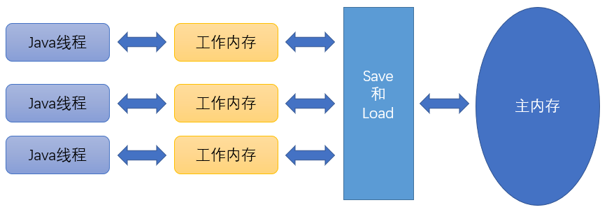

Java内存模型
《Java虚拟机规范》中定义了一种Java内存模型（Java Memory Model，JMM）来屏蔽
各种硬件和操作系统的内存访问差异，以实现让Java程序在各种平台下都能达到一致
的内存访问效果。
主内存与工作内存
Java内存 模型的主要目的是定义程序中各种变量的访问规则，则关注在虚拟机中把变量值
存储到内存和从内存中取出变量值这样的底层细节。
这里的变量指实例字段、静态字段和构成数组对象的元素。不包括局部变量和方法参数，
这些是线程私有的，不存在竞争问题。
Java内存模型没有限制执行引擎使用处理器的特定寄存器或缓存来和主内存交互，也没有
限制即时编译器是否要进行调整代码执行顺序这类优化措施。

Java内存模型规定了所有的变量都存储在主内存（Main Memory）中，每条线程都有自己的工作内存
（Working Memory）。线程的工作内存中保存了被该线程使用的变量的主内存副本，线程对变量的
所有操作（读取、赋值等）都必须在工作内存中进行，而不能直接读写主内存中的数据，不同的线程
之间也无法直接访问对方的工作内存中的变量，线程间变量值的传递均需要通过主内存来完成。
工作内存中保存了线程需要使用的变量的主内存副本，如果是很大的一个对象，会整个复制吗？
不会的，这个对象的引用、对象中某个在线程中访问到的字段有可能被复制，不会有虚拟机把
整个对象复制一次。
内存间交互操作
关于主内存与工作内存之间具体的交互协议，即一个变量如何从主内存拷贝到工作内存、
如何从工作内存同步回主内存这一类的实现细节，Java内存模型中定义了一下8中操作
来完成。Java虚拟机实现时必须保证下面提及的每一种操作都是原子的、不可再分的
（对于double和long类型的变量来说，load、store、read和write在某些平台上允许有例外）
lock（锁定）：作用与主内存的变量，把一个变量标识为一条线程独占的状态。unlock（解锁）：作用于主内存的变量，把一个处于锁定状态的变量释放出来。释放后才能被其他线程锁定
read（读取）：作用于主内存的变量，把一个变量的值从主内存传输到线程的工作内存中，以便之后的
load动作使用load（载入）：作用于工作内存的变量，把read操作从主内存中得到的变量值放入到工作内存的变量副本中。
use（使用）：作用于工作内存的变量，把工作内存中一个变量的值传递给执行引擎，每当虚拟机遇到一个需要使用变量的值的字节码指令时执行这个操作。
assign（赋值）：作用于工作内存的变量，把一个从执行引擎接收的值赋给工作内存的变量，每当虚拟机遇到一个给变量赋值的字节码指令时将会执行这个操作。
store（存储）：作用于工作内存的变量，把工作内存中一个变量的值传送到主内存中，以便随后的
write操作使用。write（写入）：作用与主内存的变量，把store操作从工作内存中得到的变量的值放入主内存的变量中。
如果把一个变量从主内存拷贝到工作内存，就要按序执行
read和load操作，如果从工作内存到主内存，就要按序执行
store和write。模型上要求必须按序执行，但不要求连续执行。也就是
read和load，store和write中间可以插入其他指令。
操作需要满足的规则
不允许
read和load、store和write操作之一单独出现。不允许一个线程丢弃它最近的
assign操作，即变量在工作内存中改变了之后必须把该变化同步回主内存。
不允许一个线程无原因地把数据从工作内存同步会主内存。
一个新的变量只能在主内存中诞生，不允许在工作内存中直接使用一个未被初始化
（
load或assign）的变量。一个变量在同一时刻只允许一条线程对其进行
lock操作，lock操作可以被同一条线程重复执行多次，多次
lock后，也需要多次unlock。如果对一个变量执行
lock操作，那将会清空工作内存中此变量的值，在执行引擎使用这个变量前，需要重新执行
load和assign操作以初始化变量的值。变量事先没被
lock，那就不运行对其进行unlock，也不运行unlock一个被其他线程
lock的变量。对一个变量执行
unlock之前，必须先把此变量同步回主内存中（store和write）。
8种内存访问操作以及上述规定（还有volatile的特殊规定）就已经准确地描述出
Java程序中哪些内存访问操作在并发下才是安全的。
Java设计团队后边将内存模型的操作简化为read、write、lock和unlock四种。
怎么用呀主要是？
编写程序时思考并发问题还是要用 先行发生原则 去判断。